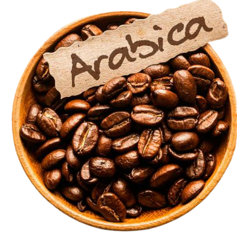
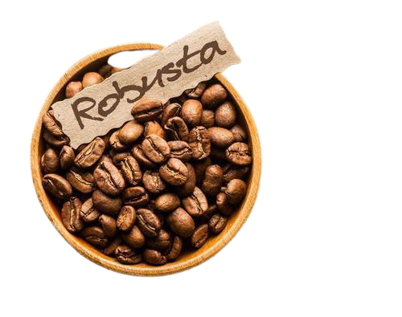
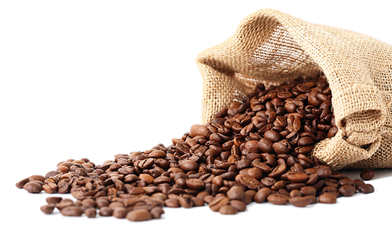

WELCOME TO WEBSITE
Halo selamat datang di website ini saya akan menjelaskan macam macam kopi
Arabica
Kopi arabika (Coffea arabica), juga dikenal sebagai kopi Arab, kopi semak Arab, atau kopi gunung, adalah spesies dari genus Coffea. Spesies ini diyakini sebagai spesies kopi pertama yang dibudidayakan, dan merupakan kultivar dominan, mewakili sekitar 60% dari produksi kopi global.
Robusta
Robusta adalah salah satu jenis tanaman kopi dengan nama ilmiah Coffea canephora. Nama robusta diambil dari kata “robust“, istilah dalam bahasa Inggris yang artinya kuat. Sesuai dengan namanya, minuman yang diekstrak dari biji kopi robusta memiliki cita rasa yang kuat dan cenderung lebih pahit dibanding arabika.
Sejarah Kopi
Kopi pertama kali ditemukan di Ethiopia, Afrika Timur, pada abad ke-9. Orang yang pertama kali menemukan kopi adalah Khaldi, seorang penggembala kambing di Ethiopia. Dalam perkembangan selanjutnya, Suku Galla di Afrika Timur memanfaatkan kopi sebagai makanan
Fakta Unik

Bagi sebagian orang mungkin mengira bahwa kandungan kafein pada espresso lebih tinggi. Nyatanya, kafein pada brewed coffee lebih tinggi karena espresso membuat orang lebih konsentrasi.
Namun dilansir dari the Dailymeal, menurut USDA, hanya ada 64 miligram kafein dalam 1 dalam 1 penyajian kopi espresso. Pada umumnya kopi memiliki 95 miligram kafein dalam 1 penyajian.
Profile Pembuat

Nama: M Dhafin Putra R F
Tempat dan tanggal lahir: Bandung, 19 Agustus 2002
Hobby: Bermain Game
Nim:10122016
Golongan darah: A
Tinggi badan: 175 cm
Zodiak: Leo